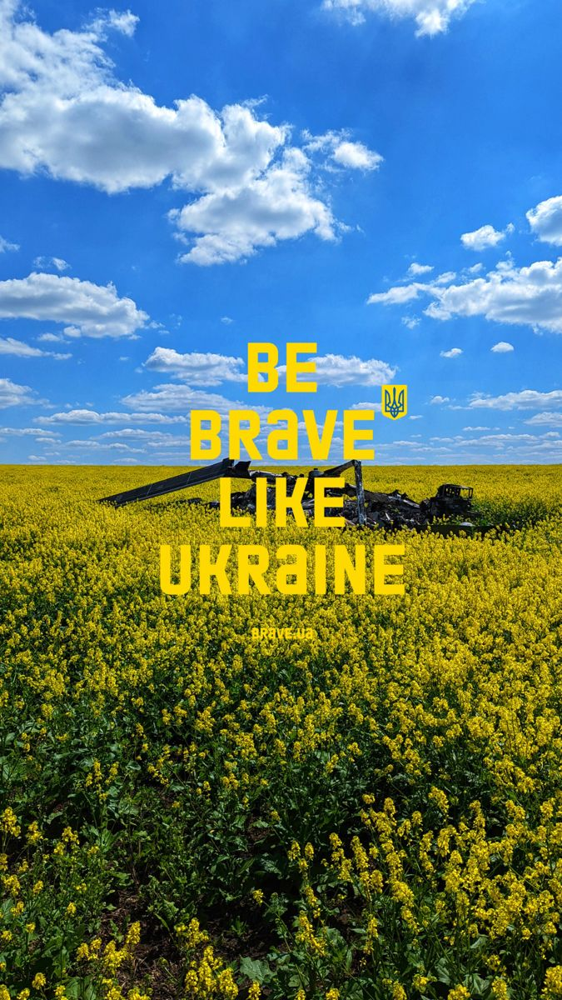
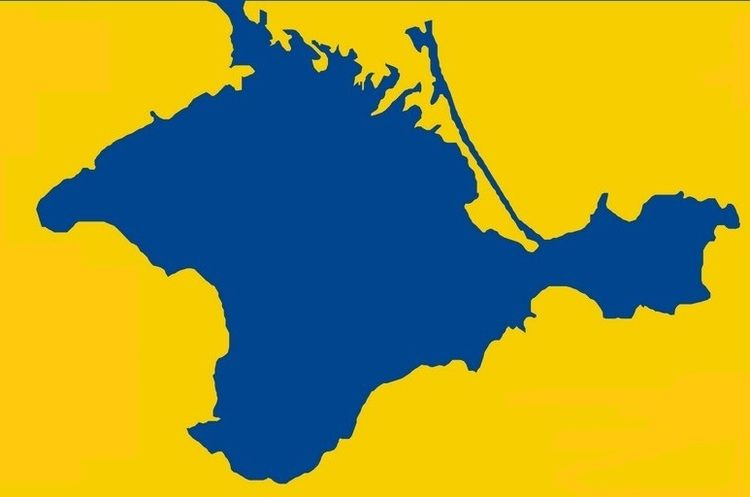

- brave people
- amazing culture
- stunning nature
- delecious food

Modern Kyiv is a mix of the old (Kyiv preserved about 70 percent of more than 1,000 buildings built during
1907-1914)[134] and the new, seen in everything from the architecture to the stores and to the people
themselves. When the capital of the Ukrainian SSR was moved from Kharkiv to Kyiv many new buildings were
commissioned to give the city
"the gloss and polish of a capital". In the discussions that centered on how to
create a showcase city center, the current city center of Khreshchatyk and Maidan Nezalezhnosti (Independence
Square) were not the
obvious choices. Some of the early, ultimately not materialised, ideas included a part of
Pechersk, Lypky, European Square, and Mykhailivska Square.
Kyiv was the historic cultural centre of the East Slavic civilization and a major cradle for the Christianization of Kyivan Rus. Kyiv retained through centuries its cultural importance and even at times of relative decay, it remained the centre of primary importance of Eastern Orthodox Christianity. Its sacred sites, which include the Kyiv Pechersk Lavra (the Monastery of the Caves) and the Saint Sophia Cathedral are probably the most famous, attracted pilgrims for centuries and now recognized as a UNESCO World Heritage Site remain the primary religious centres as well as the major tourist attraction. The above-mentioned sites are also part of the Seven Wonders of Ukraine collection.
Mykolaiv is a city and municipality in Southern Ukraine, the administrative center of the Mykolaiv Oblast. Mykolaiv city, which provides Ukraine with access to the Black Sea, is the location of the most downriver bridge crossing of the Southern Bug river. This city is one of the main shipbuilding centers of the Black Sea. Aside from three shipyards within the city, there are a number of research centers specializing in shipbuilding such as the State Research and Design Shipbuilding Center, Zoria-Mashproekt and others. As of 2022, the city has a population of 470,011. Mykolaiv holds the honorary title Hero City of Ukraine.
Kherson is a port city of Ukraine that serves as the administrative centre of Kherson Oblast. Located on the Black Sea and on the Dnieper River, Kherson is the home of a major ship-building industry and is a regional economic centre. From March to November 2022, the city was occupied by Russian forces during their invasion of Ukraine. Ukrainian forces recaptured the city on 11 November 2022.
Крим - це Україна!
Crimea is a peninsula in Ukraine, on the northern coast of the Black Sea, that has been occupied by Russia since 2014. It has a population of 2.4 million. The peninsula is almost entirely surrounded by the Black Sea and the smaller Sea of Azov. The Isthmus of Perekop connects the peninsula to Kherson Oblast in mainland Ukraine.
It serves as the administrative centre of Lviv Oblast and Lviv Raion and is one of the main cultural centres of Ukraine. It was named in honour of Leo, the eldest son of Daniel, King of Ruthenia. Lviv emerged as the centre of the historical regions of Red Ruthenia and Galicia in the 14th century, superseding Halych, Chełm, Belz and Przemyśl.
The Carpathians are the highest mountain range in Ukraine. Hoverla peak (2,061 metres) is the highest point — try it if you can! There are lots of tourist routes with different difficulty levels, nature and landscape parks, brooks and lakes all this is waiting for you! As well as popular ski and spa resorts.
Administratively, Donetsk has been the centre of Donetsk Oblast, while historically, it is the unofficial capital and largest city of the larger economic and cultural Donets Basin (Donbas) region.
Since April 2014, Donetsk and its surrounding areas have been one of the major sites of fighting in the ongoing Russo-Ukrainian War, as pro-Russian separatist forces battle against Ukrainian military forces for control of the city and surrounding areas.
Historically, the city of Mariupol was a centre for trade and manufacturing, and played a key role in the development of higher education and many businesses while also serving as a coastal resort on the Sea of Azov.
Beginning on 24 February 2022, the three-month-long siege of Mariupol by Russian forces largely destroyed the city, for which it was given the title "Hero City of Ukraine" by the Ukrainian government.[6] On 16 May 2022, all Ukrainian troops who remained in Mariupol surrendered at Azovstal Iron and Steel Works, as the Russian military secured complete control over the city by 20 May 2022